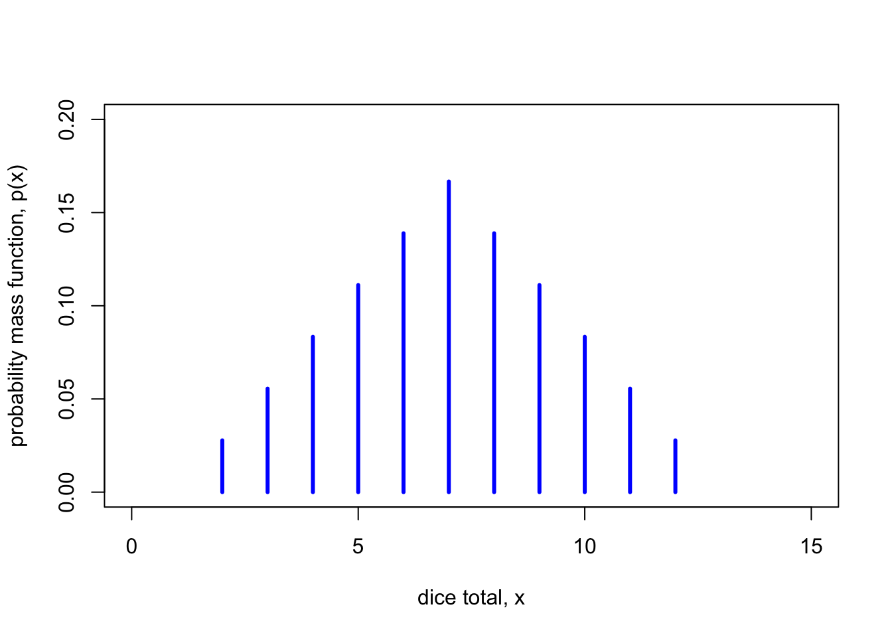
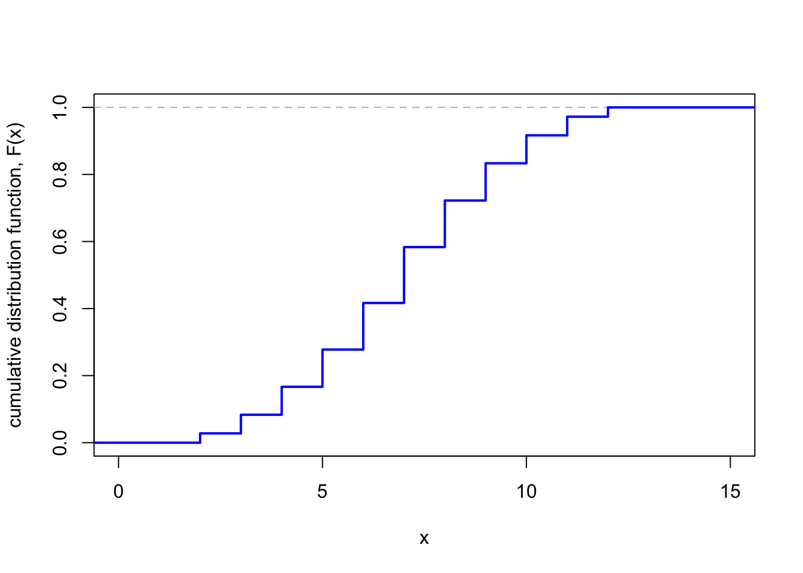

9 Discrete random variables
9.1 What is a random variable?
Let’s consider again the case of rolling two dice. We know that the sample space is the set of pairs of numbers between 1 and 6. But if we are rolling the two dice as part of a board game, we might only care about the total score on the two dice, and the actual the two individual dice scores might be irrelevant. Let us wrote write \(X\) for the total score. This \(X\) is a sort of “numerical summary” of the experiment. Probabilists call such a numerical summary a random variable.
One we’ve defined this random variable \(X\), it can be easier to work with \(X\) than with sample spaces and events. For example, if we want to know the probability that our two dice rolls add up to 5, it’s more convenient to write [ P(X = 5) ] rather than [ P(A) A = { (1,4), (2,3), (3,2), (4,1) } . ] The probability that \(X = 5\) is \(\mathbb P(X = 5) = \frac{4}{36} = \frac{1}{9}\). We might also be interested in other things about the total score \(X\), like what the average total score over many pairs if dice rolls is.
The good news is that, once we have properly set up our random variable \(X\), we can often then choose to ignore things like the sample space, the probability measure, and individual events.
Random variables are typically given capital letters from late in the alphabet, like \(X\), \(Y\), \(Z\). Values that those random variables take are often given the lower-case equivalent, like \(x\), \(y\), \(z\).
This idea of a random variable as a numerical summary of an experiment is how we think about random variables when solving problems. On the other hand, as mathematicians, we also want to define carefully what a random variable is as a mathematical object. We’ll discuss that now (but if you find the next couple of paragraphs difficult to follow, you won’t miss much if you skip them).
In this formal mathematical view, our experiment of rolling two dice is represented by a sample space [ = { = (_1, _2) : _1, _2 {1,2,3,4,5,6} } ] of pairs \(\boldsymbol\omega = (\omega_1, \omega_2)\) of numbers from 1 to 6, where \(\omega_1\) represents the first dice roll and \(\omega_2\) the second dice roll. The random variable \(X\) is the score on the first dice plus the score on the second dice – that is, [ X() = _1 + _2 . ] In other words, \(X\) is a function which takes in a sample outcome \(\boldsymbol\omega \in \Omega\) and outputs a real number \(X = X(\boldsymbol\omega) = \omega_1 + \omega_2\).
Let \(\Omega\) be a sample space. Then a random variable is a function \(X\) from \(\Omega\) to the real numbers \(\mathbb R\); that is, to each sample outcome \(\omega\) it assigns a real number \(X(\omega)\).
Expressions like \(\mathbb P(X = x)\) or \(\mathbb P(X \in A)\) should be understood as representing more formal probabilities [ P ( {: X() = x }) P ( {: X() A }) . ]
It’s useful to have a notation for the values a random variable can take.
The set of values a random variable \(X\) can take is called its range, \(\operatorname{Range}(X) = \{X(\omega) : \omega \in \Omega \}\).
So, for example, the range of the dice total \(X\) is \(\operatorname{Range}(X) = \{2, 3, \dots, 12\}\), because those are the possible outcome from the sum of two dice rolls.
Random variables that we will consider in this module will be one of two types:
- Discrete random variables have a range that is a collection of discrete separate counts, so \(\operatorname{Range}(X)\) is finite (like the dice total being an integer between 2 and 12) or countably infinite (like the positive integers). Discrete random variables can be used as models for “count data”.
- Continuous random variables have a range that is a continuum of slowly varying measurements, so \(\operatorname{Range}(X)\) is uncountably infinite (like the real numbers, the positive real numbers, or the interval \([0,1]\)). Continuous random variables can be used as models for “measurement data”.
For this week and the two weeks after, we will look at discrete random variables; later in Lectures 15 to 17 we will look at continuous random variables.
9.2 Probability mass function
We now consider only discrete random variables \(X\), where the range \(\operatorname{Range}(X)\) is finite or countably infinite. To fully understand a discrete random variable \(X\), we need only understand the probabilities \(p(x) = \mathbb P(X = x)\). These are captured by the probability mass function.
For a discrete random variable \(X\), its probability mass function (or PMF) is the function \(p_X\) where [ p_X(x) = P(X = x) ] (When the random variable \(X\) is obvious from context, we’ll just write \(p(x)\) without the subscript.)
Once we have the PMF, then Axiom 3 tells us that for any set \(A\), we have [ P(X A) = {x A} P(X = x) = {x A} p(x) . ] (Recall that the symbol \(\in\) means “is an element of”, or just “is in” for short.) So the probability that \(X\) is in some set \(A\) can be found by simply adding up \(p(x)\) for all the values \(x\) in \(A\). Thus the PMF \(p(x)\) is the only thing we need to know.
Consider tossing a biased coin, that is Heads with probability \(p\) and Tails with probability \(1-p\). Let \(X = 1\) if the coin lands Heads, and \(X = 0\) if the coin lands Tails. The PMF \(p_X\) of this random variable is given by [ p_X(0) = 1 - p p_X(1) = p . ]
We could alternatively think of the same random variable \(X\) as representing the result of an experiment, where \(X = 1\) represents a success, with probability \(p_X(1) = p\), and \(X = 0\) represents a failure, with probability \(p_X(0) = 1 - p\).
A random variable \(X\) with this PMF is called a Bernoulli trial (or a “Bernoulli random variable”, or is said to “follow the Bernoulli distribution” – after the seventeenth-century Swiss mathematician Jacob Bernoulli). We use the notation \(X \sim \text{Bern}(p)\) for short.
Let \(X\) being the sum of two dice rolls. As this is a classical probability problem, the probability \(p(x)\) of rolling a total of \(x\) is \(n(x) / 36\), where \(n(x)\) is the number of ways of rolling a total of \(x\). So, for example, there is only one way \((1,1)\) of rolling a total of 2, so \(p(2) = \frac1{36}\), but there are 5 ways of rolling a 6: \((1,5), (2,4), (3, 3), (4, 2), (5, 1)\); so \(p(5) = \frac5{36}\).
The PMF \(p\) of \(X\) is given by
| \(x\) | \(2\) | \(3\) | \(4\) | \(5\) | \(6\) | \(7\) |
|---|---|---|---|---|---|---|
| \(p(x)\) | \(\frac{1}{36}\) | \(\frac{2}{36}\) | \(\frac{3}{36}\) | \(\frac{4}{36}\) | \(\frac{5}{36}\) | \(\frac{6}{36}\) |
| \(x\) | \(\cdots\) | \(8\) | \(9\) | \(10\) | \(11\) | \(12\) |
|---|---|---|---|---|---|---|
| \(p(x)\) | \(\cdots\) | \(\frac{5}{36}\) | \(\frac{4}{36}\) | \(\frac{3}{36}\) | \(\frac{2}{36}\) | \(\frac{1}{36}\) |
Note that since \(p(x) = \mathbb P(X = x)\) is a probability, it must be greater than or equal to 0, by Axiom 1. Further, if we add up \(p(x)\) we get [ {x} p(x) = {x (X)} P(X = x) = P(X (X)) = P() = 1, ] by Axiom 2. Hence we have the following:
Let \(X\) be a discrete random variable, and let \(p_X\) be its PMF. Then
- \(p_X(x) \geq 0\) for all \(x \in \operatorname{Range}(X)\);
- \({\displaystyle \sum_{x \in \operatorname{Range}(X)} p_X(x) = 1}\).
9.3 Cumulative distribution function
Sometimes it is useful to know the probability a random variable \(X\) is less or equal to than some value \(x\). This is captured by the cumulative distribution function (or CDF) \(F_X\), where [ F_X(x) = P(X x) = _{y x} p_X(y) ]
Let \(X \sim \text{Bern}(p)\) be a Bernoulli random variable with success probability \(p\). It’s impossible for the outcome to be less than 0; it is at least 0 but strictly less than 1 only if it equals 0, which happens with probability \(p(0) = 1-p\); and it is certain to at most 1. So its CDF \(F\) is [ F(x) =
\[\begin{cases} 0 & \text{for $x < 0$} \\
1-p & \text{for $0 \leq x < 1$} \\
1 & \text{for $x \geq 1$} . \end{cases}\]
]
If \(X\) is the sum of two dice rolls, then the CDF \(F\) is given by adding up the PMF. So, for example:
- If \(x < 2\), then \(F(x) = 0\), because it’s not possible to have \(X \leq x < 2\).
- If \(2 \leq x < 3\), then \(F(x) = p(2) = \frac{1}{36}\), because \(X = 2\) is the only outcome with \(X \leq x < 3\).
- If \(3 \leq x < 4\), then \(F(x) = p(2) + p(3) = \frac{1}{36} + \frac{2}{35} = \frac{3}{36}\), as \(X = 2\) or \(3\) are the only outcomes with \(X \leq x\).
- …
- If \(x \geq 12\), then \(F(x) = 1\), because we always have \(X \leq 12 \leq x\).
| \(x \in {}\) | \((-\infty, 2)\) | \([2,3)\) | \([3,4)\) | \([4,5)\) | \(\cdots\) | \([11,12)\) | \([12, \infty)\) |
|---|---|---|---|---|---|---|---|
| \(F(x)\) | \(0\) | \(\frac{1}{36}\) | \(\frac{3}{36}\) | \(\frac{5}{36}\) | \(\cdots\) | \(\frac{35}{36}\) | \(1\) |

Note that the CDF is a “step function” that starts at 0, then jumps up suddenly at each of the values \(2, 3, \dots, 12\), finally ending up at 1.
For any random variable \(X\) with CDF \(F\),
- if \(x\) is smaller than everything in the \(\operatorname{Range}(X)\), then \(F(x) = 0\), because \(X\) cannot be that small;
- if \(x\) is greater than everything in the \(\operatorname{Range}(X)\), then \(F(x) = 1\), because \(X\) cannot be any bigger than that;
- \(F(x)\) is increasing in \(x\), because the probability you are less than \(x\) gets bigger as \(x\) gets bigger.
Summary
- A random variable is a numerical summary of a random experiment.
- The probability mass function (PMF) is \(p_X(x) = \mathbb P(X = x)\).
- The cumulative distribution function (CDF) is \(F_X(x) = \mathbb P(X \leq x)\).
- A Bernoulli random variable is 0 with probability \(1-p\) and 1 with probability \(p\).